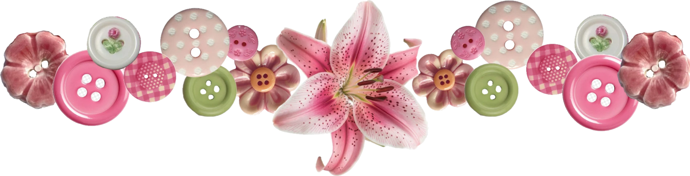

Goals & Projects
What I'm working toward.
Some of this is in progress, some of it is still an idea. This page is meant to grow as I do, so check back.

Working through the International Sports Sciences Association's program design, exercise science, and client-safety coursework toward a certified personal trainer credential.
French for "elevated", a safe space for real thoughts, faith, and growth. Motivation, honest reflection, and lessons on mindset, discipline, and trusting God, shared openly and without the filter.
I'm aspiring to start my own health food and fitness business, a café and a fitness studio. I plan to use the same sourdough starter I bake with now in my café, for its nutritional benefit.
I used to struggle to budget and understand finances, and eventually taught myself by building a financial organizer of my own. After talking to many people, I noticed that students, especially after getting a job, often struggle to budget and spend right away, only because they don't know where to start. So I made this as a free resource, the simple setup I wish I'd had.
I enjoy taking photos. Tap to view.